References are AI-generated rasters: they guide layout, rhythm, palette and hierarchy; the written spec wins.
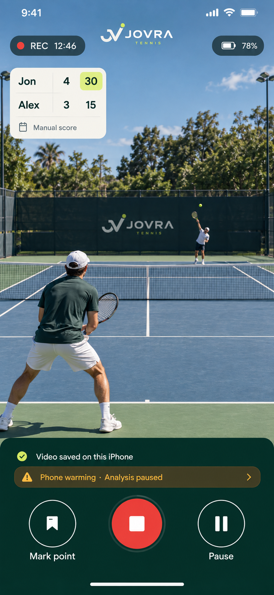
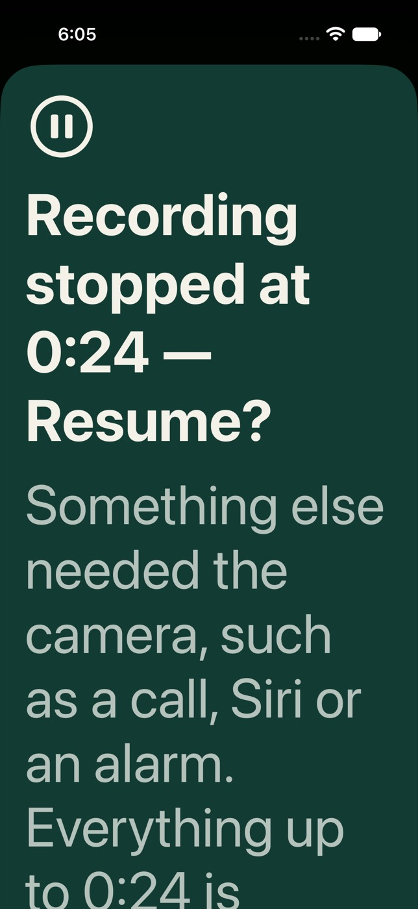
Reviewer: Claude (T17 agent) — interruption sheet (S06 states table, stories 93/97): 'Recording stopped at m:ss — Resume?', why the camera stopped and what is saved, a 'Segment saved · Saved through m:ss' confirmation and the gap list, 'Resume recording' / 'Finish session'; full-height sheet by design (a floating medium sheet scales its text frames and fails textClipped); no reference image; AX5: text wraps without clipping, capture captions move to the Large Content Viewer so the 64/76 pt controls keep their size, the lockup is dropped
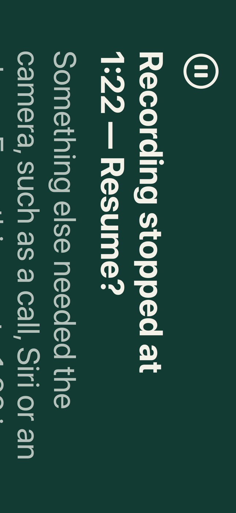
Reviewer: Claude (T17 agent) — interruption sheet (S06 states table, stories 93/97): 'Recording stopped at m:ss — Resume?', why the camera stopped and what is saved, a 'Segment saved · Saved through m:ss' confirmation and the gap list, 'Resume recording' / 'Finish session'; full-height sheet by design (a floating medium sheet scales its text frames and fails textClipped); no reference image; landscape: trailing 112 pt control rail with Mark point, Stop, Pause and '•••', status card bottom leading (S06 landscape); AX5: text wraps without clipping, capture captions move to the Large Content Viewer so the 64/76 pt controls keep their size, the lockup is dropped
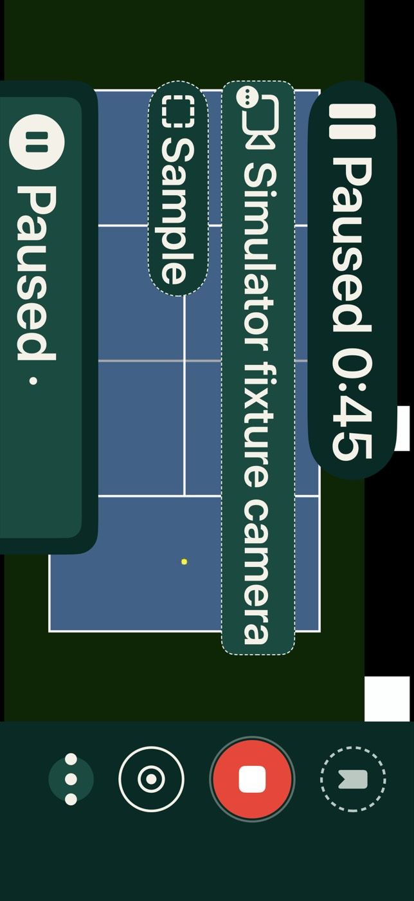
Reviewer: Claude (T17 agent) — S06 Paused state: pill reads 'Paused m:ss' with the pause glyph and no red dot, full-width 'Paused · Not recording' banner, Pause became Resume, Mark point shown unavailable (dashed ring) not faded; no reference image for this state; landscape: trailing 112 pt control rail with Mark point, Stop, Pause and '•••', status card bottom leading (S06 landscape); AX5: text wraps without clipping, capture captions move to the Large Content Viewer so the 64/76 pt controls keep their size, the lockup is dropped
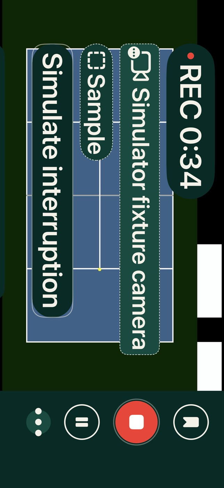
Reviewer: Claude (T17 agent) — matches 06's structure: REC pill top leading, lockup, opaque forest panel with the save status over Mark point / red 76 pt Stop / Pause, the rings centred on Stop's centre line with captions below. Deviations (spec S06 wins): the preview is the labelled simulator fixture clip letterboxed (aspect-fit shows exactly what is recorded), no scoreboard because T24's slot is empty, no battery pill because the simulator reports no level, 'Saved through m:ss' under 'Video saved on this iPhone' instead of the reference's bare line, the overflow '•••' beside the status (S06), no heat banner at nominal heat; landscape: trailing 112 pt control rail with Mark point, Stop, Pause and '•••', status card bottom leading (S06 landscape); AX5: text wraps without clipping, capture captions move to the Large Content Viewer so the 64/76 pt controls keep their size, the lockup is dropped
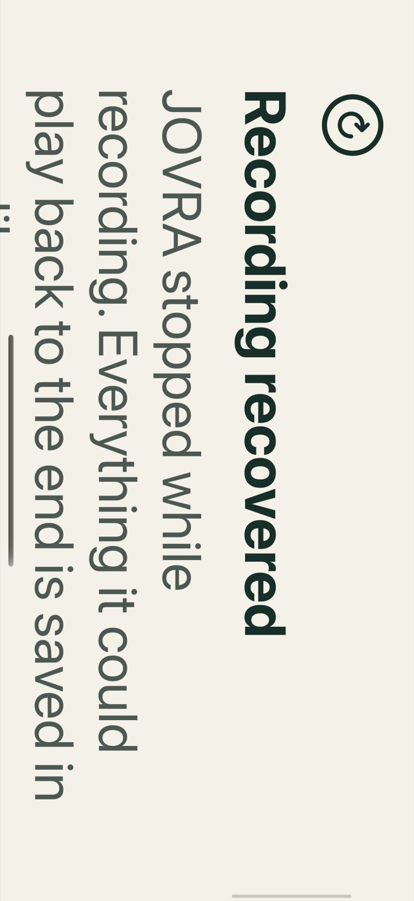
Reviewer: Claude (T17 agent) — relaunch after a killed recording: 'Recording recovered', the session title, saved-through time and every gap (a gap shorter than a second reads 'Stopped at m:ss · not saved'); no partial report because every segment decoded; not a reference-06 state (S03 Home banner in the spec; the ticket asks for a sheet); landscape: trailing 112 pt control rail with Mark point, Stop, Pause and '•••', status card bottom leading (S06 landscape); AX5: text wraps without clipping, capture captions move to the Large Content Viewer so the 64/76 pt controls keep their size, the lockup is dropped
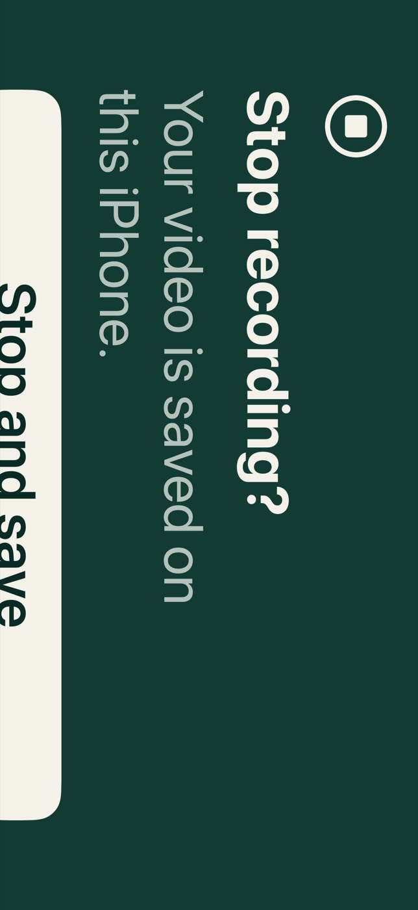
Reviewer: Claude (T17 agent) — S06 stop confirmation: 'Stop recording?' / 'Your video is saved on this iPhone.' with 'Stop and save' and 'Keep recording'. Deviation: the primary reads 'Stop and save' not 'Stop and review' because this route ends on the saved phase, not S09; landscape: trailing 112 pt control rail with Mark point, Stop, Pause and '•••', status card bottom leading (S06 landscape); AX5: text wraps without clipping, capture captions move to the Large Content Viewer so the 64/76 pt controls keep their size, the lockup is dropped
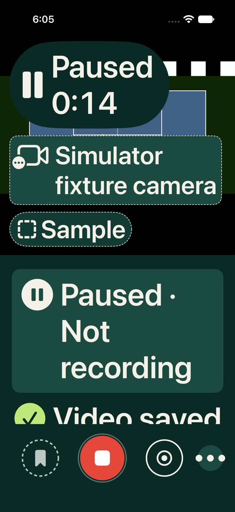
Reviewer: Claude (T17 agent) — S06 Paused state: pill reads 'Paused m:ss' with the pause glyph and no red dot, full-width 'Paused · Not recording' banner, Pause became Resume, Mark point shown unavailable (dashed ring) not faded; no reference image for this state; AX5: text wraps without clipping, capture captions move to the Large Content Viewer so the 64/76 pt controls keep their size, the lockup is dropped, and the overflow '•••' joins the control row (as in the landscape rail) so the status has the panel's full width
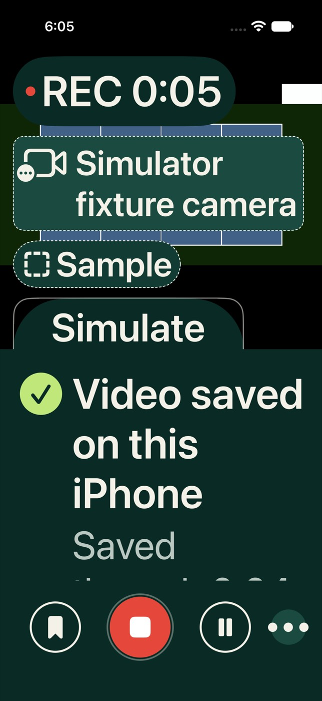
Reviewer: Claude (T17 agent) — matches 06's structure: REC pill top leading, lockup, opaque forest panel with the save status over Mark point / red 76 pt Stop / Pause, the rings centred on Stop's centre line with captions below. Deviations (spec S06 wins): the preview is the labelled simulator fixture clip letterboxed (aspect-fit shows exactly what is recorded), no scoreboard because T24's slot is empty, no battery pill because the simulator reports no level, 'Saved through m:ss' under 'Video saved on this iPhone' instead of the reference's bare line, the overflow '•••' beside the status (S06), no heat banner at nominal heat; AX5: text wraps without clipping, capture captions move to the Large Content Viewer so the 64/76 pt controls keep their size, the lockup is dropped, and the overflow '•••' joins the control row (as in the landscape rail) so the status has the panel's full width
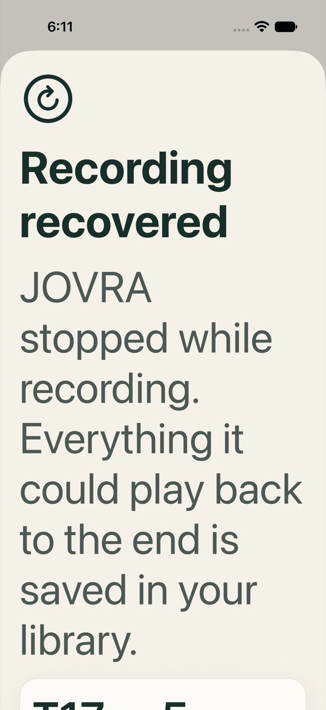
Reviewer: Claude (T17 agent) — relaunch after a killed recording: 'Recording recovered', the session title, saved-through time and every gap (a gap shorter than a second reads 'Stopped at m:ss · not saved'); no partial report because every segment decoded; not a reference-06 state (S03 Home banner in the spec; the ticket asks for a sheet); AX5: text wraps without clipping, capture captions move to the Large Content Viewer so the 64/76 pt controls keep their size, the lockup is dropped
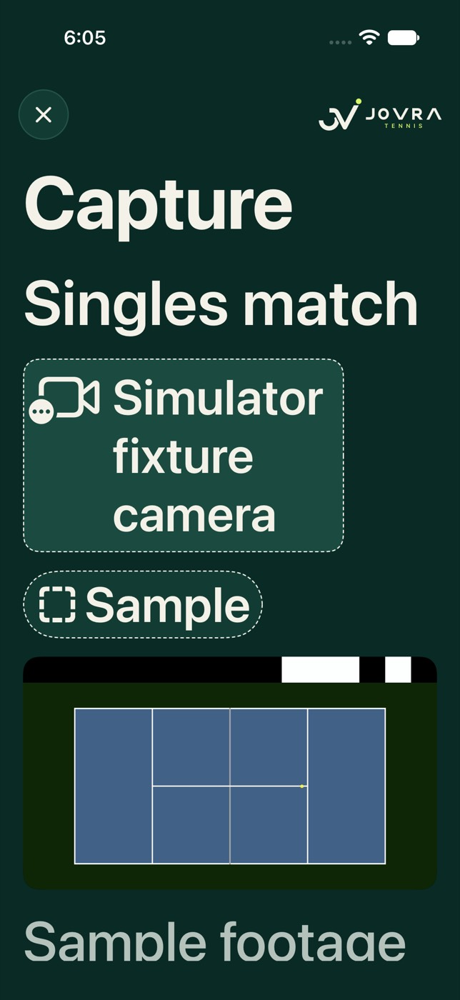
Reviewer: Claude (T17 agent) — framing phase with T23's slot placeholder: guidance text only, no court overlay or court check claimed; default singles draft summary with 'Edit match details' and Start; not a reference-06 state; AX5: text wraps without clipping, capture captions move to the Large Content Viewer so the 64/76 pt controls keep their size, the lockup is dropped
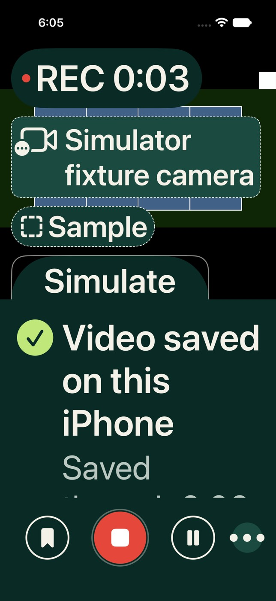
Reviewer: Claude (T17 agent) — recording phase with T24's score overlay slot and T25's court-mode slot empty: no card, no made-up score, no cover over the preview; harmless empty state; AX5: text wraps without clipping, capture captions move to the Large Content Viewer so the 64/76 pt controls keep their size, the lockup is dropped, and the overflow '•••' joins the control row (as in the landscape rail) so the status has the panel's full width
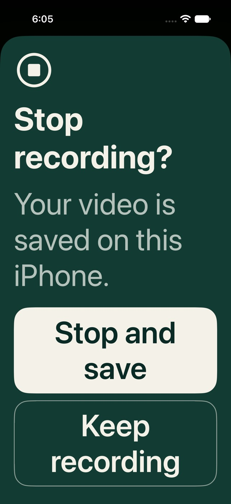
Reviewer: Claude (T17 agent) — S06 stop confirmation: 'Stop recording?' / 'Your video is saved on this iPhone.' with 'Stop and save' and 'Keep recording'. Deviation: the primary reads 'Stop and save' not 'Stop and review' because this route ends on the saved phase, not S09; AX5: text wraps without clipping, capture captions move to the Large Content Viewer so the 64/76 pt controls keep their size, the lockup is dropped
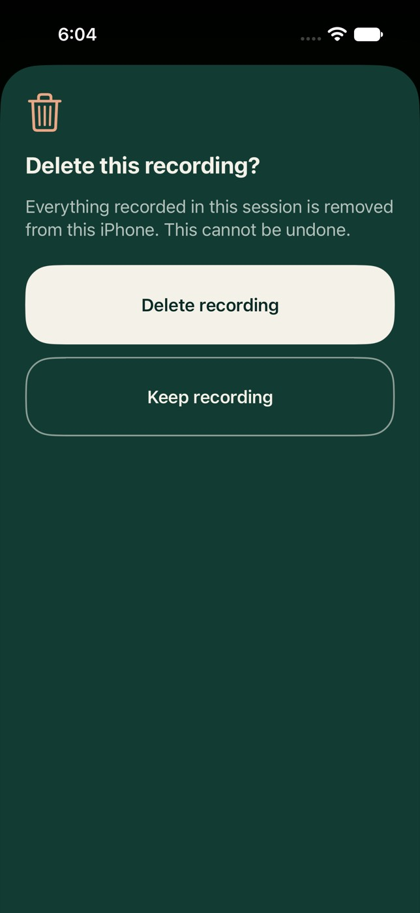
Reviewer: Claude (T17 agent) — Delete this recording (story 89, overflow per S06): 'Delete this recording?' with what is removed and that it cannot be undone, destructive 'Delete recording' and 'Keep recording'
Reviewer: Claude (T17 agent) — interruption sheet (S06 states table, stories 93/97): 'Recording stopped at m:ss — Resume?', why the camera stopped and what is saved, a 'Segment saved · Saved through m:ss' confirmation and the gap list, 'Resume recording' / 'Finish session'; full-height sheet by design (a floating medium sheet scales its text frames and fails textClipped); no reference image
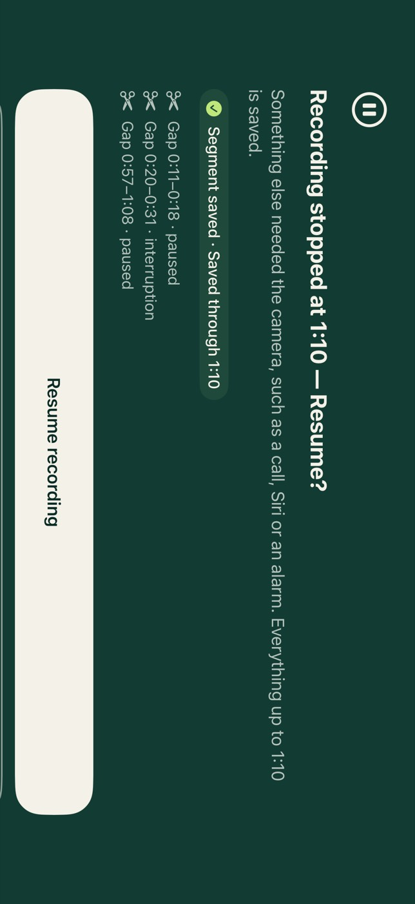
Reviewer: Claude (T17 agent) — interruption sheet (S06 states table, stories 93/97): 'Recording stopped at m:ss — Resume?', why the camera stopped and what is saved, a 'Segment saved · Saved through m:ss' confirmation and the gap list, 'Resume recording' / 'Finish session'; full-height sheet by design (a floating medium sheet scales its text frames and fails textClipped); no reference image; landscape: trailing 112 pt control rail with Mark point, Stop, Pause and '•••', status card bottom leading (S06 landscape)
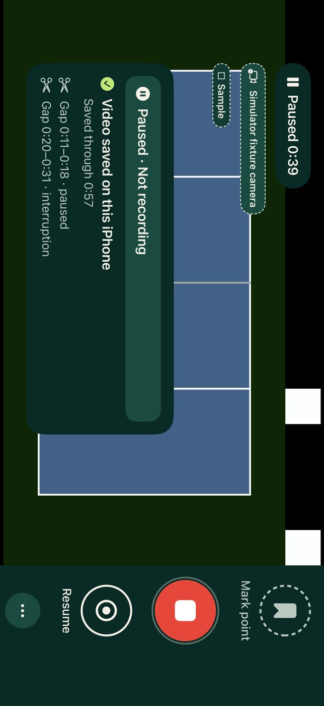
Reviewer: Claude (T17 agent) — S06 Paused state: pill reads 'Paused m:ss' with the pause glyph and no red dot, full-width 'Paused · Not recording' banner, Pause became Resume, Mark point shown unavailable (dashed ring) not faded; no reference image for this state; landscape: trailing 112 pt control rail with Mark point, Stop, Pause and '•••', status card bottom leading (S06 landscape)
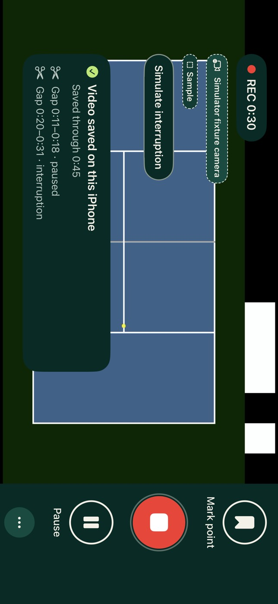
Reviewer: Claude (T17 agent) — matches 06's structure: REC pill top leading, lockup, opaque forest panel with the save status over Mark point / red 76 pt Stop / Pause, the rings centred on Stop's centre line with captions below. Deviations (spec S06 wins): the preview is the labelled simulator fixture clip letterboxed (aspect-fit shows exactly what is recorded), no scoreboard because T24's slot is empty, no battery pill because the simulator reports no level, 'Saved through m:ss' under 'Video saved on this iPhone' instead of the reference's bare line, the overflow '•••' beside the status (S06), no heat banner at nominal heat; landscape: trailing 112 pt control rail with Mark point, Stop, Pause and '•••', status card bottom leading (S06 landscape)
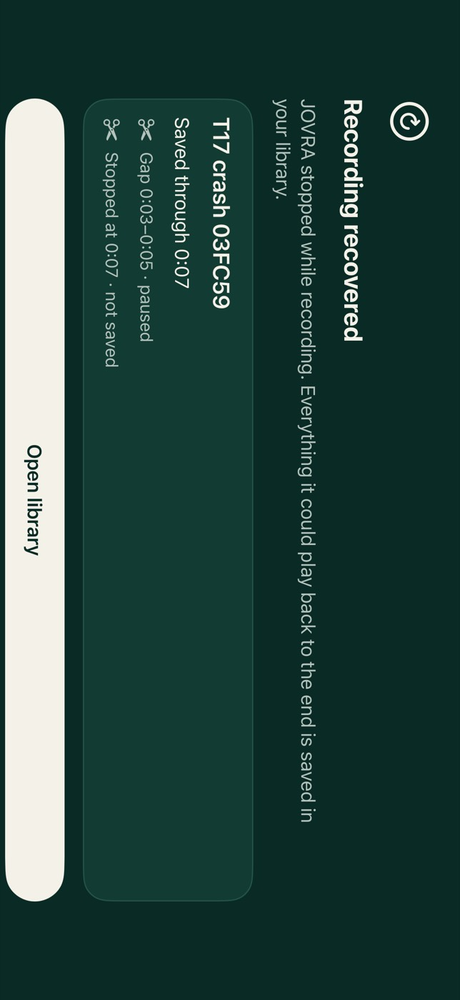
Reviewer: Claude (T17 agent) — relaunch after a killed recording: 'Recording recovered', the session title, saved-through time and every gap (a gap shorter than a second reads 'Stopped at m:ss · not saved'); no partial report because every segment decoded; not a reference-06 state (S03 Home banner in the spec; the ticket asks for a sheet); landscape: the sheet fills the screen and scrolls to its two answers
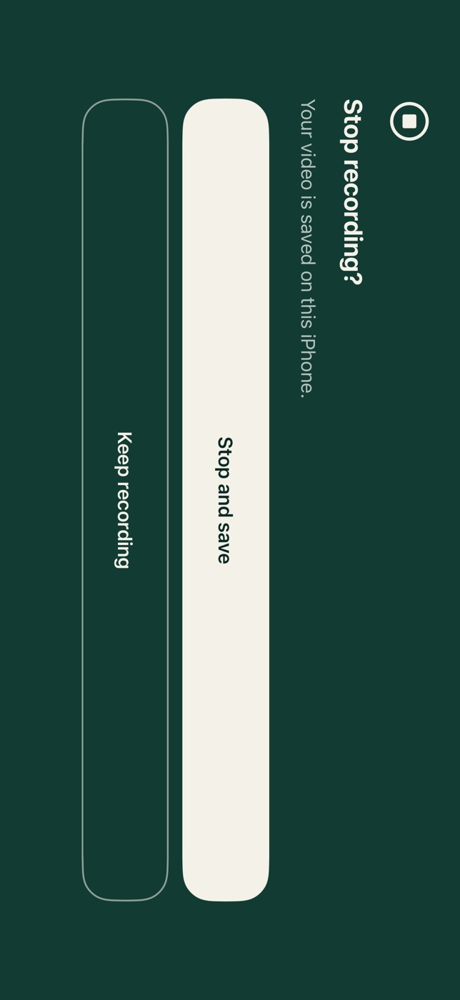
Reviewer: Claude (T17 agent) — S06 stop confirmation: 'Stop recording?' / 'Your video is saved on this iPhone.' with 'Stop and save' and 'Keep recording'. Deviation: the primary reads 'Stop and save' not 'Stop and review' because this route ends on the saved phase, not S09; landscape: trailing 112 pt control rail with Mark point, Stop, Pause and '•••', status card bottom leading (S06 landscape)
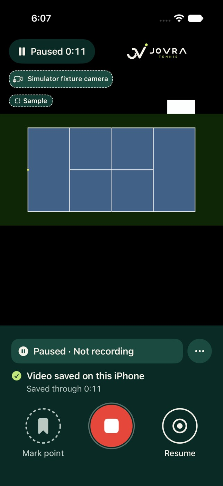
Reviewer: Claude (T17 agent) — S06 Paused state: pill reads 'Paused m:ss' with the pause glyph and no red dot, full-width 'Paused · Not recording' banner, Pause became Resume, Mark point shown unavailable (dashed ring) not faded; no reference image for this state
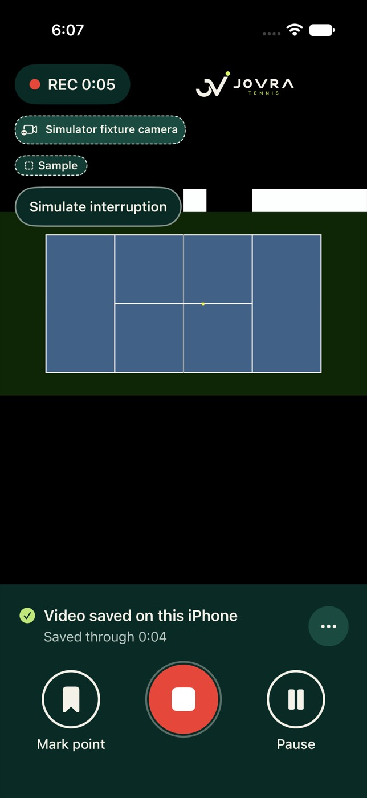
Reviewer: Claude (T17 agent) — matches 06's structure: REC pill top leading, lockup, opaque forest panel with the save status over Mark point / red 76 pt Stop / Pause, the rings centred on Stop's centre line with captions below. Deviations (spec S06 wins): the preview is the labelled simulator fixture clip letterboxed (aspect-fit shows exactly what is recorded), no scoreboard because T24's slot is empty, no battery pill because the simulator reports no level, 'Saved through m:ss' under 'Video saved on this iPhone' instead of the reference's bare line, the overflow '•••' beside the status (S06), no heat banner at nominal heat
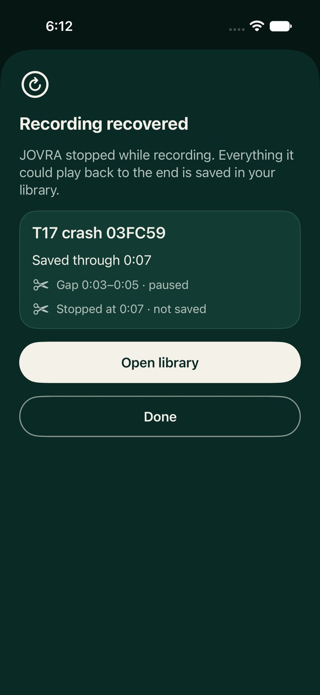
Reviewer: Claude (T17 agent) — relaunch after a killed recording: 'Recording recovered', the session title, saved-through time and every gap (a gap shorter than a second reads 'Stopped at m:ss · not saved'); no partial report because every segment decoded; not a reference-06 state (S03 Home banner in the spec; the ticket asks for a sheet)
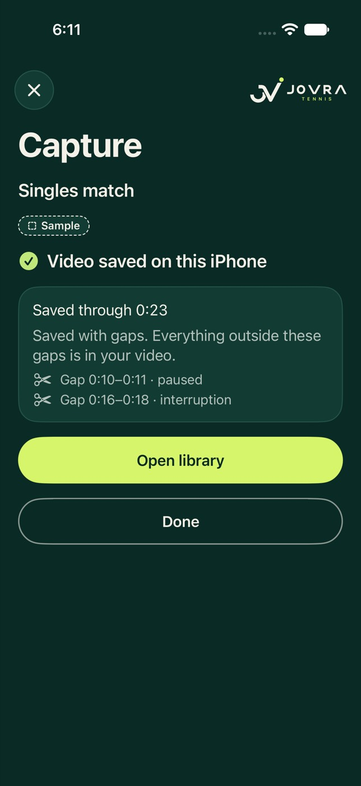
Reviewer: Claude (T17 agent) — saved phase after the sink acknowledged: 'Video saved on this iPhone', saved-through, 'Saved with gaps' with the gap list, Open library / Done; not a reference-06 state
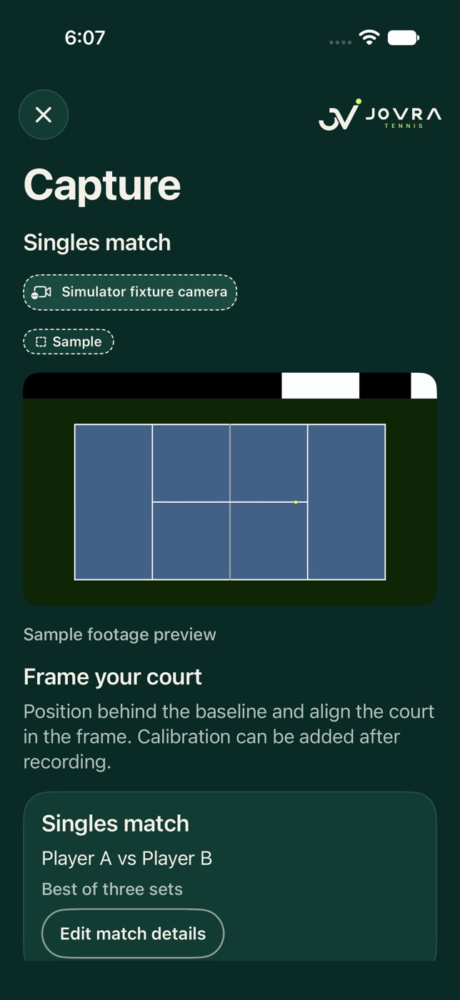
Reviewer: Claude (T17 agent) — framing phase with T23's slot placeholder: guidance text only, no court overlay or court check claimed; default singles draft summary with 'Edit match details' and Start; not a reference-06 state
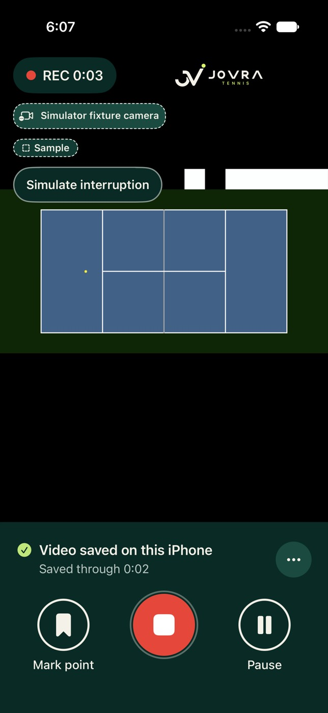
Reviewer: Claude (T17 agent) — recording phase with T24's score overlay slot and T25's court-mode slot empty: no card, no made-up score, no cover over the preview; harmless empty state
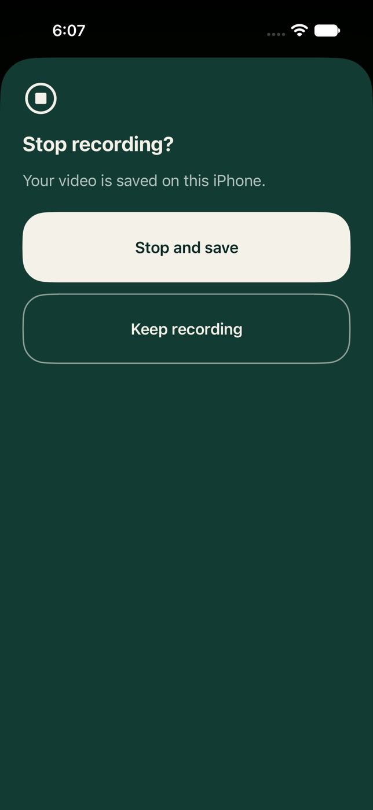
Reviewer: Claude (T17 agent) — S06 stop confirmation: 'Stop recording?' / 'Your video is saved on this iPhone.' with 'Stop and save' and 'Keep recording'. Deviation: the primary reads 'Stop and save' not 'Stop and review' because this route ends on the saved phase, not S09
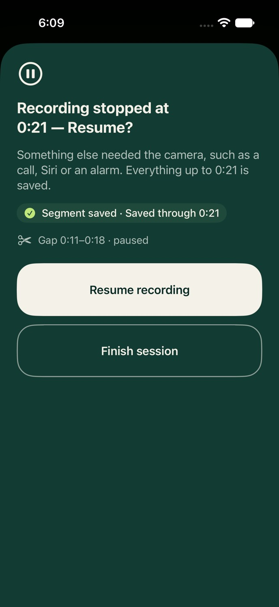
Reviewer: Claude (T17 agent) — interruption sheet (S06 states table, stories 93/97): 'Recording stopped at m:ss — Resume?', why the camera stopped and what is saved, a 'Segment saved · Saved through m:ss' confirmation and the gap list, 'Resume recording' / 'Finish session'; full-height sheet by design (a floating medium sheet scales its text frames and fails textClipped); no reference image; light app appearance: capture stays forest as S06 is a dark screen in both appearances
Reviewer: Claude (T17 agent) — interruption sheet (S06 states table, stories 93/97): 'Recording stopped at m:ss — Resume?', why the camera stopped and what is saved, a 'Segment saved · Saved through m:ss' confirmation and the gap list, 'Resume recording' / 'Finish session'; full-height sheet by design (a floating medium sheet scales its text frames and fails textClipped); no reference image; landscape: trailing 112 pt control rail with Mark point, Stop, Pause and '•••', status card bottom leading (S06 landscape); light app appearance: capture stays forest as S06 is a dark screen in both appearances
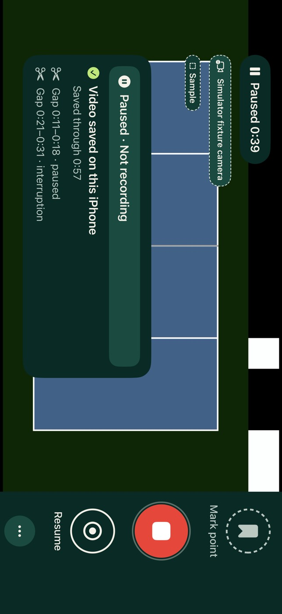
Reviewer: Claude (T17 agent) — S06 Paused state: pill reads 'Paused m:ss' with the pause glyph and no red dot, full-width 'Paused · Not recording' banner, Pause became Resume, Mark point shown unavailable (dashed ring) not faded; no reference image for this state; landscape: trailing 112 pt control rail with Mark point, Stop, Pause and '•••', status card bottom leading (S06 landscape); light app appearance: capture stays forest as S06 is a dark screen in both appearances
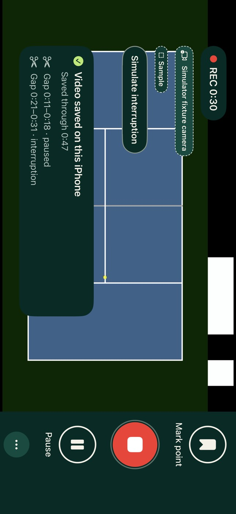
Reviewer: Claude (T17 agent) — matches 06's structure: REC pill top leading, lockup, opaque forest panel with the save status over Mark point / red 76 pt Stop / Pause, the rings centred on Stop's centre line with captions below. Deviations (spec S06 wins): the preview is the labelled simulator fixture clip letterboxed (aspect-fit shows exactly what is recorded), no scoreboard because T24's slot is empty, no battery pill because the simulator reports no level, 'Saved through m:ss' under 'Video saved on this iPhone' instead of the reference's bare line, the overflow '•••' beside the status (S06), no heat banner at nominal heat; landscape: trailing 112 pt control rail with Mark point, Stop, Pause and '•••', status card bottom leading (S06 landscape); light app appearance: capture stays forest as S06 is a dark screen in both appearances
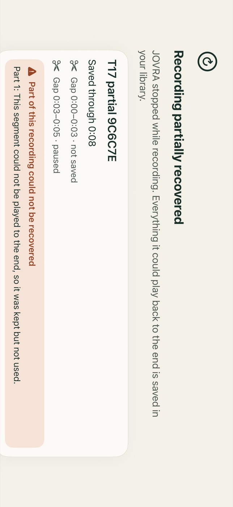
Reviewer: Claude (T17 agent) — relaunch after a killed recording whose first segment was replaced by undecodable bytes (user story 100): the title says 'Recording partially recovered', the lost part is listed as 'Gap 0:00–m:ss · not saved' beside the player's pause, and the attention panel names 'Part 1' with the scanner's reason; the playable second part is kept and saved-through is its end; not a reference-06 state; light app appearance, landscape: the sheet fills the screen and scrolls to its two answers
Reviewer: Claude (T17 agent) — S06 stop confirmation: 'Stop recording?' / 'Your video is saved on this iPhone.' with 'Stop and save' and 'Keep recording'. Deviation: the primary reads 'Stop and save' not 'Stop and review' because this route ends on the saved phase, not S09; landscape: trailing 112 pt control rail with Mark point, Stop, Pause and '•••', status card bottom leading (S06 landscape); light app appearance: capture stays forest as S06 is a dark screen in both appearances
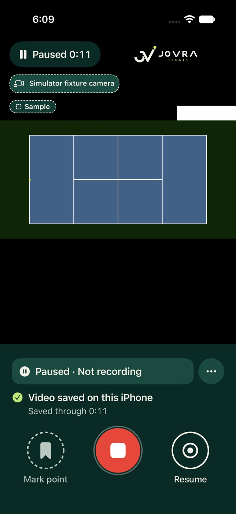
Reviewer: Claude (T17 agent) — S06 Paused state: pill reads 'Paused m:ss' with the pause glyph and no red dot, full-width 'Paused · Not recording' banner, Pause became Resume, Mark point shown unavailable (dashed ring) not faded; no reference image for this state; light app appearance: capture stays forest as S06 is a dark screen in both appearances
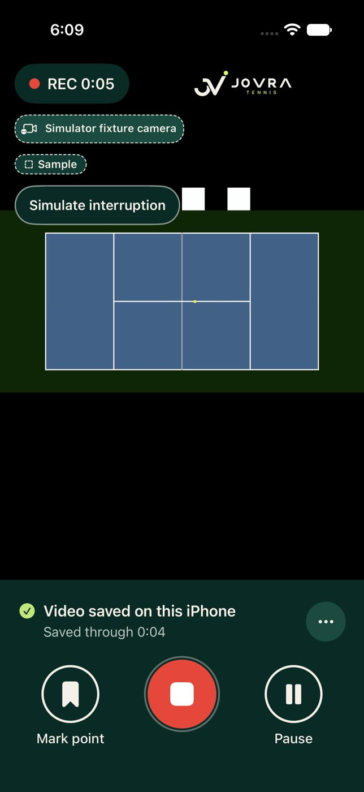
Reviewer: Claude (T17 agent) — matches 06's structure: REC pill top leading, lockup, opaque forest panel with the save status over Mark point / red 76 pt Stop / Pause, the rings centred on Stop's centre line with captions below. Deviations (spec S06 wins): the preview is the labelled simulator fixture clip letterboxed (aspect-fit shows exactly what is recorded), no scoreboard because T24's slot is empty, no battery pill because the simulator reports no level, 'Saved through m:ss' under 'Video saved on this iPhone' instead of the reference's bare line, the overflow '•••' beside the status (S06), no heat banner at nominal heat; light app appearance: capture stays forest as S06 is a dark screen in both appearances
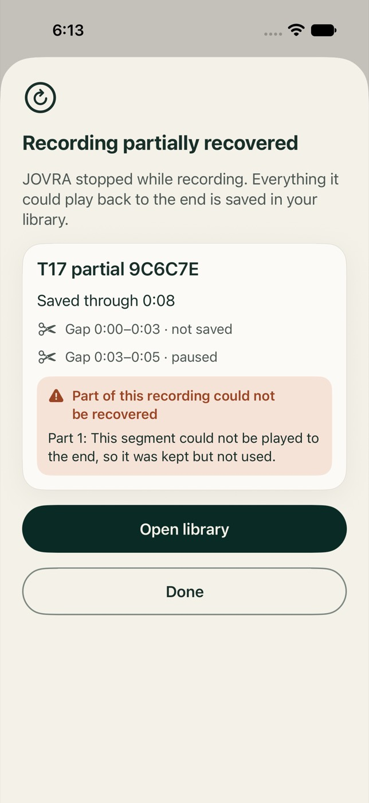
Reviewer: Claude (T17 agent) — relaunch after a killed recording whose first segment was replaced by undecodable bytes (user story 100): the title says 'Recording partially recovered', the lost part is listed as 'Gap 0:00–m:ss · not saved' beside the player's pause, and the attention panel names 'Part 1' with the scanner's reason; the playable second part is kept and saved-through is its end; not a reference-06 state; light app appearance
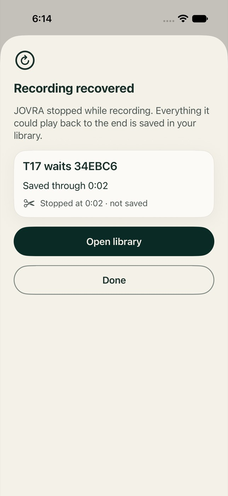
Reviewer: Claude (T17 agent) — relaunch after a killed recording: 'Recording recovered', the session title, saved-through time and every gap (a gap shorter than a second reads 'Stopped at m:ss · not saved'); no partial report because every segment decoded; not a reference-06 state (S03 Home banner in the spec; the ticket asks for a sheet); light app appearance: presented after a forest capture route closed in the same launch, and still in the app's light appearance
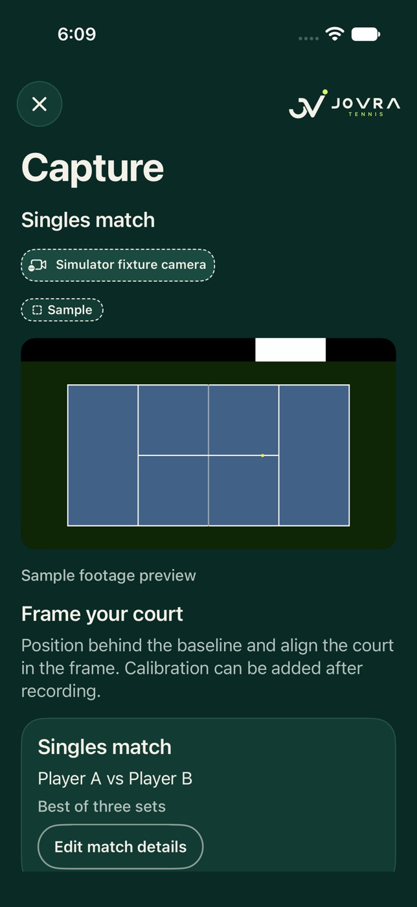
Reviewer: Claude (T17 agent) — framing phase with T23's slot placeholder: guidance text only, no court overlay or court check claimed; default singles draft summary with 'Edit match details' and Start; not a reference-06 state; light app appearance: capture stays forest as S06 is a dark screen in both appearances
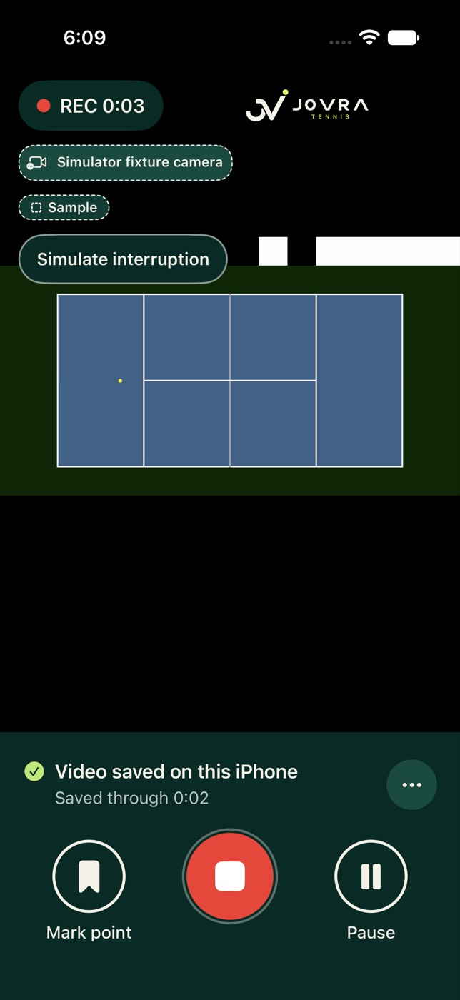
Reviewer: Claude (T17 agent) — recording phase with T24's score overlay slot and T25's court-mode slot empty: no card, no made-up score, no cover over the preview; harmless empty state; light app appearance: capture stays forest as S06 is a dark screen in both appearances
Reviewer: Claude (T17 agent) — S06 stop confirmation: 'Stop recording?' / 'Your video is saved on this iPhone.' with 'Stop and save' and 'Keep recording'. Deviation: the primary reads 'Stop and save' not 'Stop and review' because this route ends on the saved phase, not S09; light app appearance: capture stays forest as S06 is a dark screen in both appearances